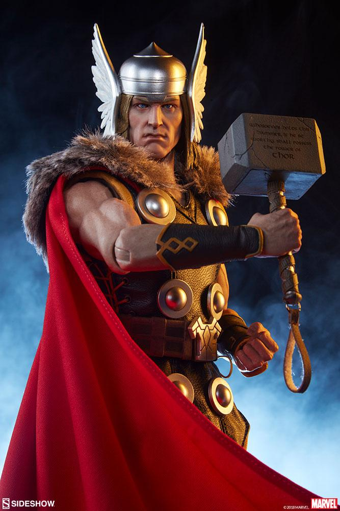
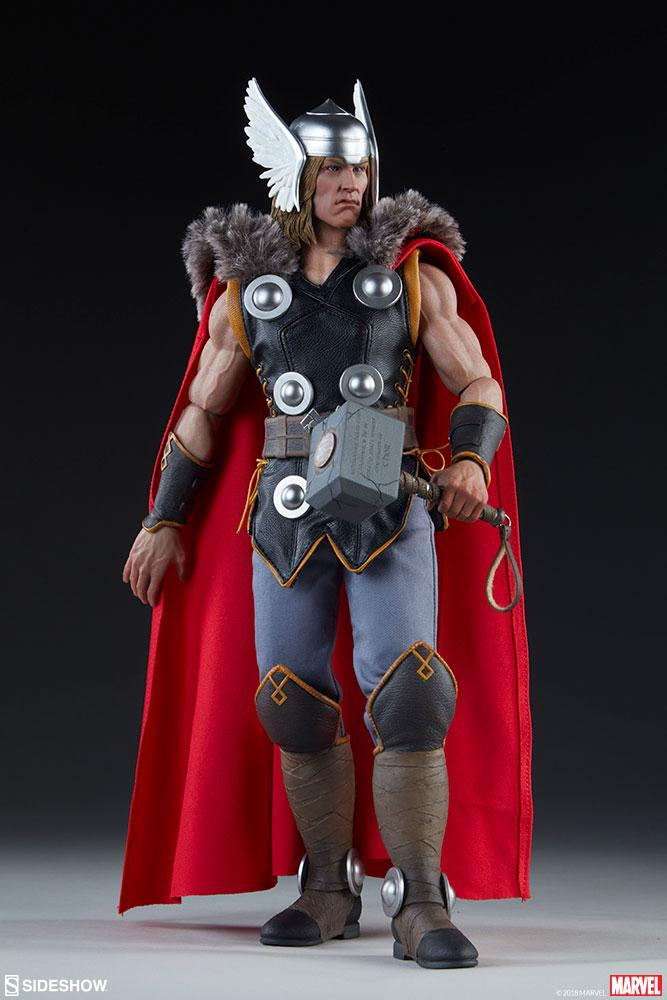
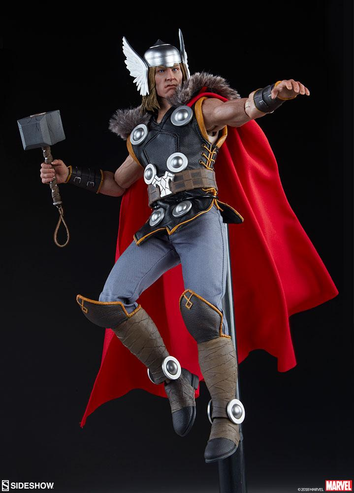
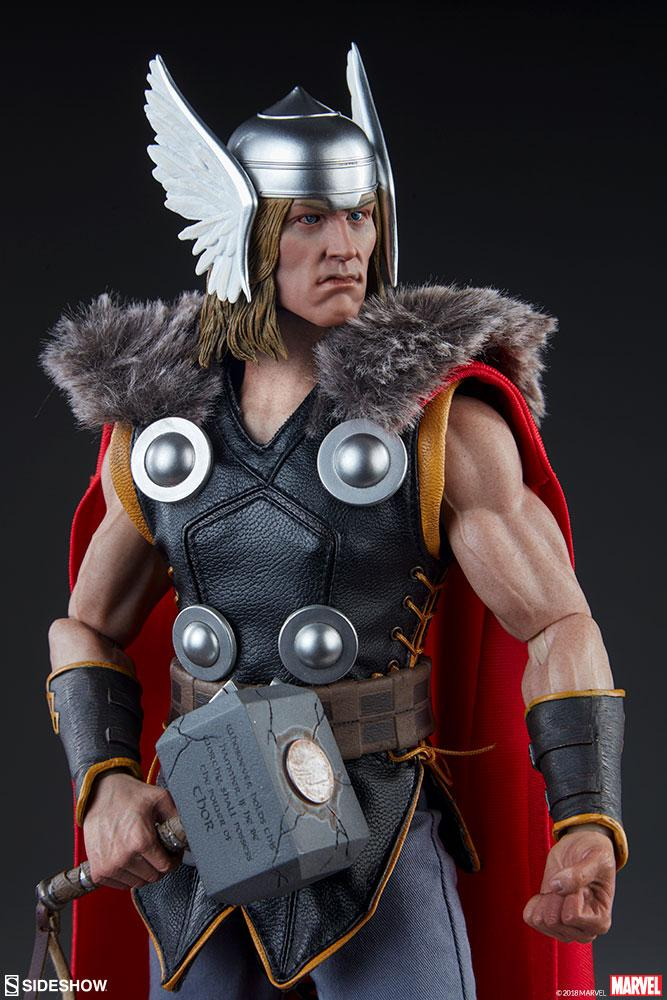

THOR
Kuzey Cermenleri'nin teleffuzu ile Thor, diğer Cermen halklarının teleffuzları ile Donar, Donner, Dunor, Thunraz, Thunor; çeşitli Cermen mitolojilerinde yer alan gök gürültüsü tanrısı.[1] Thor hakkındaki bilgilerin çoğu Cermen mitolojilerinde çok önemli bir yeri olan İskandinav mitolojisinde geçmektedir. Megingjord adlı sihirli bir kemeri ve Tanngniost ve Tanngnisrir (Diş Çatırdatan ve Diş Gıcırdatan) denilen iki keçisi vardır. Mjölnir adlı efsanevi çekici kullanmaktadır.[1] Daha fazla göster...


